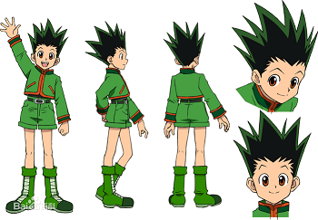
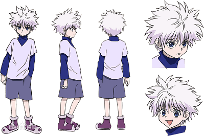
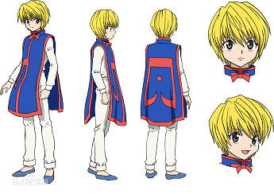
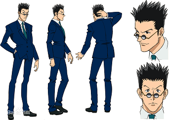

《全职猎人》 是日本漫画家富坚义博的一部漫画作品。该作于1998年3月16日起在日本集英社旗下漫画杂志《周刊少年Jump》上不定期连载，电子版由漫番漫画连载 ；另亦有根据原作改编的同名电视动画、剧场版和电子游戏等周边媒体产品。
连载信息
漫画连载于日本《周刊少年Jump》，在2006年2月13日（JUMP11号）260话之后即宣布休刊至4月，后又改为无限期休刊，2007年10月6日（JUMP45号）连载再开，270话（2007年12月1日）后又再度休刊，之后2008年3月3日（JUMP14号）连载再开。 280话（2008年5月）后又再度休刊。 2008年10月3日连载再开，290话（2008年12月1日）再度休刊。
2010年1月4日周刊少年JUMP新年合并号第5‧6期再开，310话（2010年5月）再度休刊。
2011年9月宣布持续连载，318话嵌合蚁篇正式完结，319话（2011年10月5号）正式进入会长选举篇。
故事简介
主人公杰·富力士从小在鲸鱼岛长大，与米特阿姨和阿婆相依为伴。性格开朗的他，有着能与动物沟通的灵性。因为无父无母，杰将米特阿姨当成自己的生母爱着。直到9岁那一年，杰在森林里被一位青年男子搭救。从他口中杰得知自己的父亲还活着而且职业是猎人。在说服米特阿姨之后，杰独自踏上了寻父的征程。于是，杰决定成为猎人，从这里开始找寻他父亲的踪迹。靠这样一种信念开始了冒险旅途，并在旅途当中结交好友，不断成长，从而引发了后面的所有故事，引出猎人的精彩世界。
登场人物
- 杰·富力士 在得知自己的父亲还活着而且职业是猎人后，决定参加猎人试验成为猎人，从这里开始找寻他父亲的踪迹。第287期猎人试验中7名合格者之一。
- 奇犽·揍敌客 杀手世家揍敌客家族的三少爷。12岁那年，打伤了母亲及二哥后离家出走，并参加猎人试验。在第287期猎人试验中一路过关斩将，但在最终试验却失去资格。身心经过成长之后，在第二年的试验中成为唯一的合格者。
- 酷拉皮卡 已灭亡的窟卢塔族的幸存者，把散乱在世界各地的同胞的火红眼取回是他的目标。在第287期猎人试验最终试验，他获评为“各方面能力最平均”，高标通过。后来加入诺斯拉家族为保镖，一直等机会夺回火红眼。
- 雷欧力·帕拉丁奈特 由于小时候无力救回好友的命，于是决定从医的青年。因猎人的种种特权与资源方便学医，而决定参加猎人试验成为猎人。第287期猎人试验中7名合格者之一。
用语解说
猎人
所谓“猎人”即是探寻重要文化遗产及稀少的动植物并加以保护，还要抓出重大嫌疑犯的人，既是职业也是阶级。猎人设有执照制度，由猎人协会每年举行严格的考试，合格的人才会得到猎人牌照，然后可依自己的意思使用牌照，他们有各种权利（如免费使用95℅的各国公共设施），不过也必须选择做自己想要种类的猎人，尽该尽的义务，例如：旅游在世界各地寻求美味食材的美食猎人、受雇于人的私家猎人、经过严格测验之追求金银财宝的寻宝猎人、去寻找发现许多不为人知幻兽的幻兽猎人、追捕通揖犯或违规猎人的奖金猎人等。
念能力
人类自身体发出的能量称为“念”，自由操控、增加念的能力叫作“念能力”。
贪婪之岛
一个价值80亿戒尼的猎人专属游戏，由念能力者制作〈由杰的父亲领导的十一人所制作〉。本游戏只有念能力者能玩，制作者把念灌入一百片的软件中，游戏一开始念也跟着发动，将玩家们拉入游戏中，只要玩家到游戏里，即使把主机插头拔掉，游戏依然会进行，玩家死了游戏就会停止，但在游戏中死亡就是真正的死亡，只要找到储存点玩家就可以回来。并且贪婪之岛是在现实中真实存在的，旅团几人就曾试图从岛外部进入，但却被看守员用卡片遣回。
出版信息
漫画单行本原版由日本的集英社出版，繁体中文版由台湾的东立出版社、香港的文化传信代理发行。
漫画在连载期间经历了数次的休刊与复刊，因此漫画进度十分缓慢。截至2014年2月，漫画累计发行量6629万部。 [36] 2013年日本Oricon年度漫画销售（2012年12月3日~2013年11月25日间销量）排行第8位（423万1475部）。
| 卷数 | 集英社（日本） | 东立出版社（台湾） |
| 1 | 1998年06月04日 | 1998年11月10日 |
| 2 | 1998年09月02日 | 1999年01月10日 |
| 1 | 1998年06月04日 | 1998年11月10日 |
| 1 | 1998年06月04日 | 1998年11月10日 |
| 1 | 1998年06月04日 | 1998年11月10日 |
| 1 | 1998年06月04日 | 1998年11月10日 |